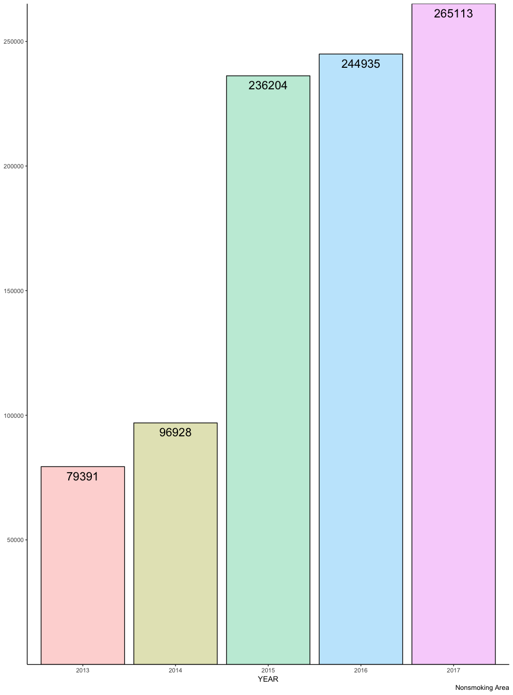
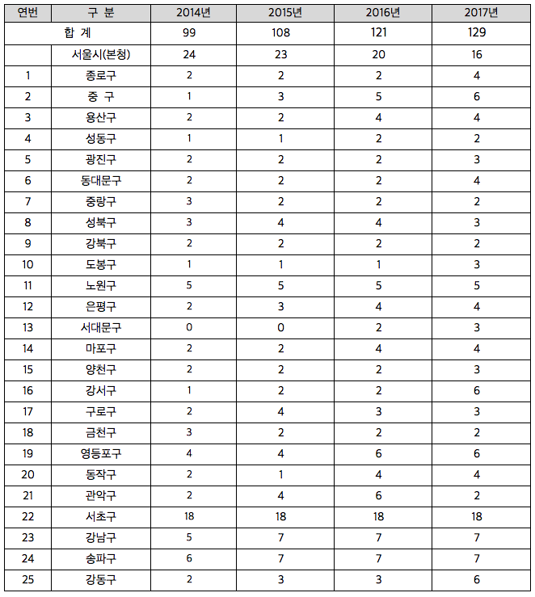
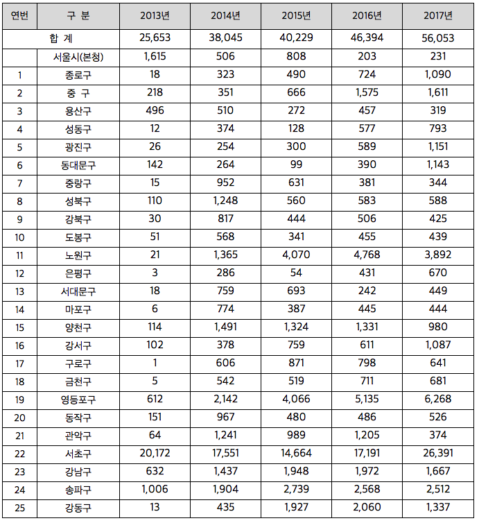
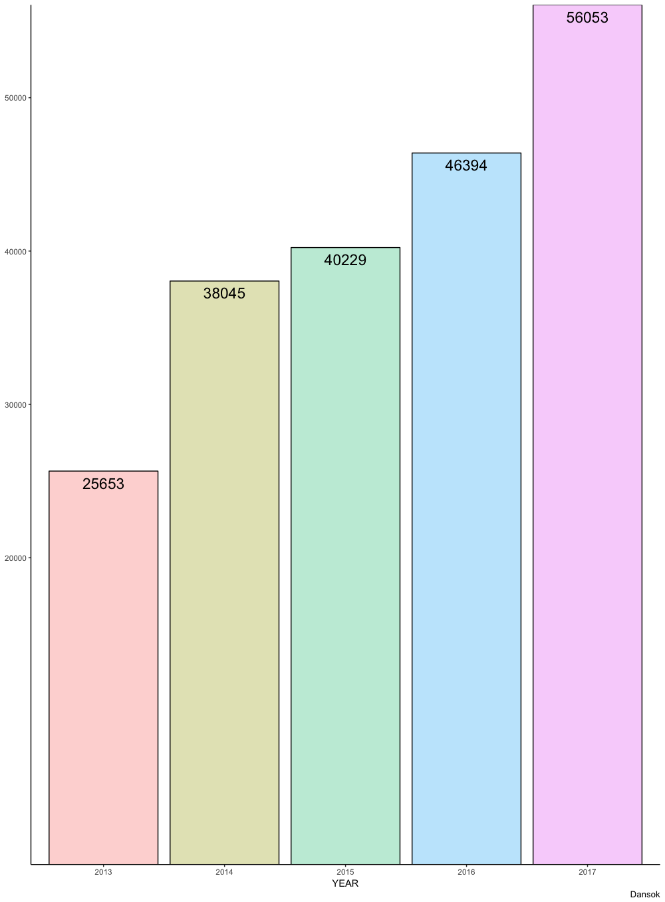

CAUSE
금연구역 현황
서울시 관내 금연구역은 2012년 79,391개에서 2017년5월 248,432개로 증가하였다. 이에 반해 서울시가 파악한 흡연구역의 개수는 25개 구 중 14개 구의 59개뿐이다. 59개의 흡연시설 중 ‘실내 흡연실’ 및 ‘실외 흡연구역’은 포함되어 있지 않다.
금연구역 개수 총 248,432개소(실내 230,917개소 실외 17,515개소)
2017. 5 기준
| 2012 | 2013 | 2014 | 2015 | 2016 | 2017.5 |
|---|---|---|---|---|---|
| 79,391 | 96,928 | 118,060 | 236,204 | 244,670 | 248,432 |

연도별 금연구역
금연구역 단속 요원
 서울시와 자치구의 금연구역 단속요원은 2014년 99명에서 2017년 129명으로 총 30.3%(30명)가 증가하였다
 연도별 단속요원
연도별 단속요원
서울시와 자치구 금연구역 단속 현황
 서울시의 2013년 금연구역 단속건수는 25,653건을 기록하였다 2017년 단속건수는 56,053건으로 2013년 대비 118.5%(30400건) 증가하였다.

금연구역 단속 현황
가장 중요한 잠재 원인
가장 중요한 잠재 원인은 금연구역의 숫자가 증가하는 반면 흡연구역의 증가는 미비하다는 점
원인 규명 모델
공분산
공분산은 두 변수 사이의 선형 관계를 측정한 값. 그러나 공분산은 상관계수와 달리 표준화된 값이 아님. 따라서 공분산 값의 범위는 음의 무한대에서 양의 무한대까지
| COV(단속건수, 금연구역) | |
|---|---|
| COV | 757310507 |
| COR(단속건수, 단속인원) | |
|---|---|
| COV | 102774.6 |
상관계수
상관계수는 공분산을 사용하여 계산됨. 공분산을 변수의 표준 편차 곱으로 나누어서 둘 사이의 상관관계를 비교함
| COR(단속건수, 금연구역) | |
|---|---|
| COR | 0.8634 |
| COR(단속건수, 단속인원) | |
|---|---|
| COR | 0.9545 |